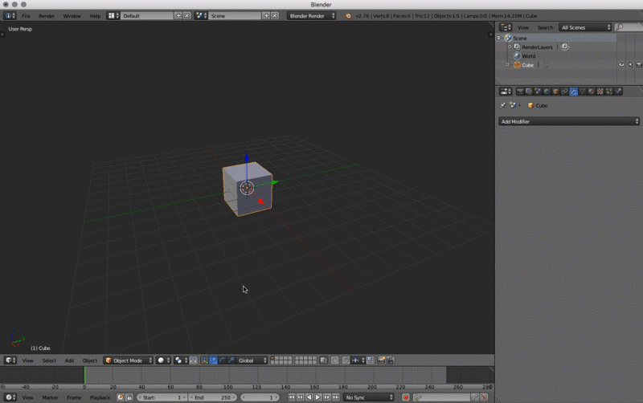
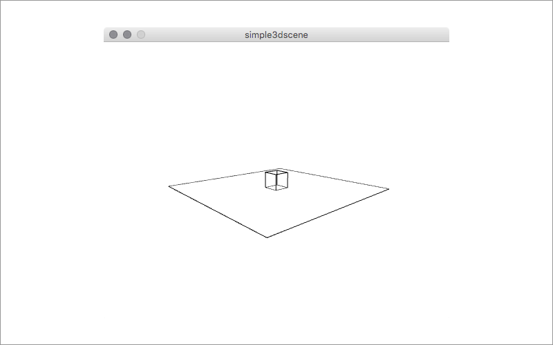

doing papercraft
Introduction
This repository is a write-down for an upcoming workshop @ the University of Applied Sciences Potsdam (Germany). We will explore the minimal basics of the 3D application Blender to create some primitive shapes. These shapes will then be unfolded for laser cutting. It is a walkthrough of some possible workflows. We will focus on using Blender and exporting 3D data from it. If you already know other 3D applications you can skip Blender and move on to the Unfolding section. This is still work in progress, there might be 🐛, 🐉 and 👾.
Prerequisites
- a computer
- a 3 button mouse
- Blender (or another 3D application if you already know how to model in 3D)
- 123DMake
- Processing (optional)
3D Application (Blender)
Blender is a professional free and open-source 3D computer graphics software product used for creating animated films, visual effects, art, 3D printed models, interactive 3D applications and video games. Blender's features include 3D modeling, UV unwrapping, texturing, raster graphics editing, rigging and skinning, fluid and smoke simulation, particle simulation, soft body simulation, sculpting, animating, match moving, camera tracking, rendering, video editing and compositing. Alongside the modeling features it also has an integrated game engine.
From Wikipedia, the free encyclopedia)
Shortcuts
Blender relies heavily on shortcuts. See all shortcuts here waldobronchart.github.io/ShortcutMapper/#Blender. Some shortcuts depend on the position of the mouse e.g. x for deleting only works when the mouse is over the 3D view.
Search Menu
Another quick way to call actions open panels is the "Search Menu". It gives you quick access to all of Blenders commands by typing. you can open it just by hitting the space bar This is pretty handy if you know a commands name but don't know where to find it. Read more here.
Interface
Customize UI
Go to: File > User Preferences… and select the "Input" tab.
- Change the Mouse selection from right click to left click in the settings > input tab
- emulate Numpad (if you're on a laptop you can use the numbers instead of the numpad)
- adjust UI colors in the theme tab (if you like it more fancy)
You need to hit "Save User Settings" at the bottom of the window to apply these changes.

You can add or remove windows by right clicking into the "seam" between two windows to add or join new windows. When adding you toggle horizontal or vertical split by pressing the middle mouse button. You can do the same by clicking and dragging the upper left corner to the left or down. To remove them just join them again. (See the animation below)
| Mouse | Action |
|---|---|
| Right click window seam | split/join windows |
| Right click window seam select split + middle mouse | toggle horizontal/vertical split |
| click + drag striped corner down/up | split horizontally |
| click + drag striped corner left/right | split vertically |

Window content
You can change the content of a window by changing the icon in the header (which is at the bottom of the 3D view).

3D View areas
Within the 3D view you also have a tool bar on the left and the tool shelf on the right. t shows tool bar and n the tool shelf. On the toolbar you have the most common commands for transformation, editing, creation and many more. On the tool shelf you can access properties for transformations, the view, the 3D cursor and many more. Both of these panels are kind of quick access palettes for properties and action that are essential for editing.

Display methods
You can switch the display method on the bottom of the 3D view. For us the only important options are "Solid", "Wireframe" and "Bounding Box".

3D View Navigation
The basic navigation in the 3D view is done with the mouse. You can also change the view by using the numpad.
| Mouse | Action |
|---|---|
| left mouse | select |
| right mouse | set 3D cursor position |
| middle mouse click | orbit |
| middle mouse click + ⇧ | pan |
| scroll | zoom |
The most useful keys on the numpad are (table also has emulated numpad):
| Key Combo (emulated) | View Change | Key Combo |
|---|---|---|
| 1 | Front | Numpad 1 |
| Ctrl + 1 | Back | Numpad Ctrl + 1 |
| 3 | Right | Numpad 3 |
| Ctrl + 3 | Left | Numpad Ctrl + 3 |
| 7 | Top | Numpad 7 |
| Ctrl + 7 | Bottom | Numpad Ctrl + 7 |
| 5 | Toggle orthographic vs perspective mode | Numpad 5 |
| 0 | Camera View | Numpad 0 |
| Not so important keys | Numpad | |
| 4 | Orbit Left | Numpad 4 |
| Ctrl + 4 | Pan Left | Numpad Ctrl + 4 |
| 6 | Orbit Right | Numpad 6 |
| Ctrl + 6 | Pan Right | Numpad Ctrl + 6 |
| 8 | Orbit Up | Numpad 8 |
| Ctrl + 8 | Pan Up | Numpad Ctrl + 8 |
| 2 | Oribit Down | Numpad 2 |
| Ctrl + 2 | Pan Down | Numpad Ctrl + 2 |
| - | Zoom Out | Numpad - |
| Zoom In (seems not to work) |
Object and Edit Mode
The "Object Mode" is for working with objects in a whole. The "Edit Mode" is for editing vertices, edges or faces of an object. When using modifiers you see their effect in object mode. Not in Edit Mode.
Selection
To select objects use the left mouse click (if set to left selection. The default is right selection). You can add or remove objects to or from the selection by holding ⇧. Selected objects are highlighted in orange (default theme). The first in the order of selected objects is a bit brighter. You can also select everything by hitting a. In "Edit Mode" there are some extra options for selecting things. You can switch between vertices, edges and faces selection and you can combine them with the buttons on the bar below the 3D view.
The rectangular (hit r before selecting) or circular (hit c) selection by clicking and dragging only applies to the visible objects, vertices, edges and faces by default you can change this if you want. There are more options for selecting. Like Inverting selections and so on. See the Blender Manual
| Action | Result | Mode |
|---|---|---|
| Left Mouse | select | Object/Edit Mode |
| Left Mouse + ⇧ | add/remove | Object/Edit Mode |
| a | select all | Object/Edit Mode |
| Ctrl + i | invert the current selection | Object/Edit Mode |
| Ctrl + Tab | selection mode switcher | Edit Mode |
| b + left mouse click & drag | select rectangular area | Edit Mode |
| c + left mouse click & drag | paint selection area | Edit Mode |
| c + left mouse + mouse wheel | paint selection increase or decrease | Edit Mode |

Transformation
Using manipulators
You can transform objects, groups, vertices, edges and faces (i.e. your selection) by using the 3D manipulators. Change between grab, rotate and scale mode on the bottom of the 3D view. You can combine them or shut them off totally. If you click and drag into the circle at the centre of the manipulator you transform on all axis at once.

Using hotkeys
Sometimes it is even more convenient to use the hotkeys. When using the hotkeys you can easily constrain the manipulation to an axis. Just hit for example g + x to only move the selection on the global x-axis. If you hit x twice you transform on the objects local axis. The second transformation corresponds with the pull down next to the manipulator buttons on the button of the view. Read some more about the manipulators here.
| Key | manipulation |
|---|---|
| r | rotate |
| r + x/y/z | rotate on one axis only (global) |
| r + x/y/z × 2 | rotate on one axis only (selected axis) |
| g | transform (grab) |
| g + x/y/z | transform (grab) on one axis only (global) |
| g + x/y/z × 2 | transform (grab) on one axis only (selected axis) |
| s | scale |
| s + x/y/z | scale on one axis only (global) |
| s + x/y/z × 2 | scale on one axis only (selected axis) |
| alt + g | snaps selection to the center of the scene (Object Mode only) |

3D Cursor
The 3D cursor is a pivot point for various features. You can e.g. rotate objects around the cursor (see image below). Newly created objects get created at this position. You can also use the cursor to snap objects to it or the other way around.
| Key/Action | Result |
|---|---|
| right click | set 3D cursor position |
| ⇧ + c | reset 3D cursor to the centre of the scene |
| ⇧ + s | open snap menu (snap to cursor and so on) |

Creation
Duplication
To duplicate the current selection (in edit or object mode) just hit ⇧ + d. This also sets the newly created objects into grab mode so you can set their new position. All the Transformation rules apply.
Add & Delete
On the tool bar on the left of the 3D view you have various possibilities to add objects.
Use the Create tab an the left to add basic shapes. You can also use the hotkey ⇧ + a or use the "Add" menu at the bottom of the 3D view. When you create a new shape you get a new panel at the bottom of the toolbar. There you can set additional settings for the newly created shape e.g. the subdivision of a ICO Sphere or the depth and the radius of a cylinder ad so on. This is only possible on creation of the shape. If the operator panel does not show up just hit F6 to show it as a floating panel.
To delete the selection hit x this applies for Edit- and Object Mode. In Edit Mode you get an additional panel to decide what should be deleted e.g. Vertices, edges, faces and even more options like edge collapse and more. You need to play with it and read in the manual about it.
| Key/Action | Result |
|---|---|
| Toolbar Left | add different type of objects |
| Add Menu | add different type of objects |
| ⇧ + a | open "Add" floating panel |
| F6 | open "Operator" floating panel |
| x | delete selection |
Mesh Manipulation
Besides just adding primitive shapes on one another you can also edit the mesh directly. To do this Go to Edit Mode by hitting the ⇥ key (TAB). As mentioned before in the Selection section you can select in different way. Vertices only, faces or edges or combine these options. You can now move the selection around as mentioned in the Transformation section. To manipulate your mesh even further you can now copy and paste your selection. (⌘ + c & ⌘ + v). Additionally you can use several options on the toolbar to edit your mesh. Each option has its own operators.
Extrude
Extrudes the current selection. All Transformation and Selection options apply. You can basically differentiate between "extrude region" (hit e or use the button on the toolbar) and "extrude individual". The region extrudes the selection together. The individual extrusion uses each local axis to extrude. See the manual for further information.

| Key/Action | Result |
|---|---|
| e | Extrude Region |
| ⌥ + e | Extrude Individual |
Other Manipulations
| Key/Action | Result | Description |
|---|---|---|
| f | Fill | Fills the selection with vertices, edges and faces |
| ^ + f | Face manipulation panel | Various options to edit faces |
| i | inset face | Works only with faces |
| ^ + b | bevel | Works only with faces |
| ^ + e | Edge manipulation panel | Various options to edit edges |
| ^ + v | Vertex manipulation panel | Various options to edit vertices |
| w | Specials Panel | Holds various options |
To create new geometry on an existing one you can use the several options. Subdivide, Loop Cut and Slide or the Knife to name just a few. Subdivide for example divides the surface a defined number of times and gives some more options, like smoothness and fractal noise. Loop Cut and Slide allows to subdivide a selection as well by setting a position to cut in by dragging the mouse. the Knife does what it says. Allows to cut the mesh.
Additionally you will see extra information on some tools on the bottom bar of the 3D view. The Knife for example needs to be confirmed by hitting ↩ (RETURN). Explore the tools by playing with them.
Modifiers
Some modifications can be tedious when done by hand. Fortunately lots of operations have already been pre defined as modifiers. You can access them on the "Properties" window under the little wrench. All modifiers first only affect the selected object. If you want to generate real mesh from them you need to apply them. Also be aware that modifiers work in stack. The order of them define their outcome. You can move them in the stack order by using the up and down arrows on each modifier. We will take a look at some of them that might be useful for our purpose. When you export your form for exchange with the forthcoming applications you don't need to apply these modifiers. An export to Wavefront obj will add all these vertices to the mesh. Read more about modifiers here.
| Type | Name | Short Description |
|---|---|---|
| Generate | Subdivision Surface Modifier | Subdivide surface of selected object |
| Generate | Boolean Modifier | Intersect, unify or differentiate objects from one another |
| Deform | Simple Deform Modifier | Deform objects by Twisting, bending,tabering or stretching them |
| Generate | Array Modifier | Create multiple copies of an object |
| Generate | Bevel Modifier | |

Subdivision Surface
This modifier divides each surface by the number set in the view/render section of it. The difference between view and render should be clear. View is what we see in the 3D view. Render is what will be used in the final render. For our purpose the only thing we need to be concerned about is the view setting. This is what will be exported into our exchange formats. You can also switch between a "Simple" and "Catmull-Clark". To see the result before applying you need to switch the view to Wireframe. See the section Display methods. You can read more about this modifier here.
"Catmull-Clark" The default option, subdivides and smooths the surfaces. According to its Wikipedia page, the “arbitrary-looking formula was chosen by Catmull and Clark based on the aesthetic appearance of the resulting surfaces rather than on a mathematical derivation.

Boolean
The "Boolean Modifier" can be used to create intersection between two objects. When you first apply it you wont see any change. You need to select another object in your scene to be used as the mesh object for the operation. Then you have 3 different methods to apply the modifier. Read more here.
| Methods | Result |
|---|---|
| Intersect | The target mesh is subtracted from the modified mesh. |
| Union | The target mesh is added to the modified mesh. |
| Difference | The modified mesh is subtracted from the target mesh. |

Simple Deform
The Simple Deform modifier allows easy application of a simple deformation to an object (meshes, lattices, curves, surfaces and texts are supported).
Simple Deform Modifier
| Mode | Description |
|---|---|
| Twist | Rotates around the Z axis. |
| Bend | Bends the mesh over the Z axis. |
| Taper | Linearly scales along Z axis. |
| Stretch | Stretches the object along the Z axis (negative Factor leads to squash), preserving volume by scaling inversely on the X and Y axes.. |

Array
The "Array Modifier" can be used to duplicate elements. You can offset the copies on the 3 axis relative or constantly. You can use an objects transformation to define the offset as well. There are some more options for this modifier. It can be pretty powerful to create multiple copies of an object. Read more here.

Subdivide and Displace
To show you what can be done by combining several modifiers the following animation shows how to use the Subdivision Surface and Displace modifiers together. The subdivision is done to create more vertices and the displacement to generate some offset on them. The displace modifier uses textures to offset the vertices. You could also use an image or a ramp to displace the vertices. Be creative. This is already rather complex for the starters. Use it as inspiration. There are many more modifiers. To much to explore them all here. Play with some/all of them.

Add-ons
Additionally to the many build in features of Blender there is a whole ecosystem of Add-ons. There are several Add-ons that are directly distributed with Blender but bot enabled by default. You can browse them in the user preferences an enable those that you like to use. You can also install Add-ons from file. These are Python scripts that are written by members of the community. For our project there are two Add-ons we need to download and install.

- Export: Paper Model (.svg) | Export printable net for paper modeling
- Autodesk DXF (.dxf) | Export geometry to .DXF file format.
Paper Model Add-on
Both are pretty self-explanatory. The Paper Model Add-on adds under File > Export > Paper Model (.svg) the possibility to export a unfolded vector graphic of the selected object. In the export panel ae on the lower left side some export options for the graphic. You can specify the page size, add margins, create tabs for gluing your model and some more options. Read some more about this Add-on here.


The DXF export Add-on might be useful when working with "dxf2papercraft".
Export
To export our data we can use different options. For one we can use the Paper Model Add-on. Then we have a vector graphic we just have to clean up and convert to DXF to use it for laser cutting. If this is your chosen workflow, move on to Creating clean data. If you want to use 123DMake or Paperkura you need to use an interchange format like STL) or OBJ. You don't need to specify a final scaling. 123DMake and Paperkura both allow to edit the scaling of the Model and the material/paper size.
STL STereoLithography
If you use STL you need to use the ascii format and apply all modifiers when used. It would be better that you don't apply the modifiers from within the Add-on. As already mentioned the modifiers depend on their stack, so applying them by hand gives you a better control over the outcome.
OBJ Wavefront
You can also use the Wavefront OBJ format. It has some more options for the export but creates a equivalent result. You also should apply the modifiers first as mentioned for the STL export.
3D Application (Processing)
Processing (programming language) Processing is an open source programming language and integrated development environment (IDE) built for the electronic arts, new media art, and visual design communities with the purpose of teaching the fundamentals of computer programming in a visual context, and to serve as the foundation for electronic sketchbooks. The project was initiated in 2001 by Casey Reas and Benjamin Fry, both formerly of the Aesthetics and Computation Group at the MIT Media Lab. One of the stated aims of Processing is to act as a tool to get non-programmers started with programming through the instant gratification of visual feedback. The language builds on the Java language, but uses a simplified syntax and graphics programming model. In 2012, they started the Processing Foundation along with Daniel Shiffman, who formally joined as a third project lead. From Wikipedia, the free encyclopedia)
We wont go in depth into programming with Processing. This here are just some notes on how to export usable 3D data for our purpose. For this we have this simple 3D scene that will create a OBJ file you can use in 123DMake and Paperkura. First you need to install the OBJExport library from Nervous System. There is a guide on the Processing Wiki on how to install libraries manually. If this worked you can open the Processing IDE, paste the sketch blow into the window and run the sketch. This will create simple scene with a cube and plane and will create the output.obj file next to your Processing sketch. This data can be edited in Blender)
/**
* Simple sketch for doing papercraft
* uses the OBJExport library from
* http://n-e-r-v-o-u-s.com/tools/obj/
*
* @author Fabian "fabiantheblind" Morón Zirfas
* @license ISC https://opensource.org/licenses/ISC
*/
import nervoussystem.obj.*; // import the lib
/**
* the setup runs once.
* We only set the size of the canvas.
*
*/
void setup() {
size(500, 400, P3D);
}
/**
* This runs all the time. Actually we use the noLoop() statement.
* it prevents that our scene gets exported each frame.
*
*/
void draw() {
background(255);
// set the position of the camera
camera(width/10, height/3, -30, width/2, height/2, -250, 0, 1, 0);
// start the export
beginRecord("nervoussystem.obj.OBJExport", "output.obj");
// offset the scene to the center of the canvas.
// This makes the calculation of the coordiantes easier
translate(width/2, height/2, -250);
// make a transformation that only affects the plane
pushMatrix();
// rotate by 90 degrees on the x axis
rotateX(radians(90));
// start the shape.
beginShape(QUADS);
// write the vertices
vertex(-100, -100, -10);
vertex(100, -100, -10);
vertex(100, 100, -10);
vertex(-100, 100, -10);
// end the shape
endShape();
// reset the matrix of the the sketch so the
// rotation does not affect the other objects
popMatrix();
// we don't want the cube tu be solid
noFill();
// start the cube
beginShape(QUADS);
vertex(-10, 10, 10);
vertex( 10, 10, 10);
vertex( 10, -10, 10);
vertex(-10, -10, 10);
vertex( 10, 10, 10);
vertex( 10, 10, -10);
vertex( 10, -10, -10);
vertex( 10, -10, 10);
vertex( 10, 10, -10);
vertex(-10, 10, -10);
vertex(-10, -10, -10);
vertex( 10, -10, -10);
vertex(-10, 10, -10);
vertex(-10, 10, 10);
vertex(-10, -10, 10);
vertex(-10, -10, -10);
vertex(-10, 10, -10);
vertex( 10, 10, -10);
vertex( 10, 10, 10);
vertex(-10, 10, 10);
vertex(-10, -10, -10);
vertex( 10, -10, -10);
vertex( 10, -10, 10);
vertex(-10, -10, 10);
// end the cube
endShape();
// end the recording
// this also exports the obj file
endRecord();
// we don't want to run the sketch again
noLoop();
}

Creating clean data
create unfolded data
- export from Blender
- 123DMake (cross platform)
- Paperkura (Win 38$)
- dxf2papercraft commandline tool (open source Win & Linux)
Workflow 1. 123DMake
3D application (modeling) > Export Wavefront (obj) or Binary/ASCII STL (stl) > 123DMake > Export PDF or EPS > 2D application (clean up) > Export DXF R14 (Illustrator/Inkscape)
Workflow 2. Paperkura
3D application (modeling) > Export Metasequoia (mqo), Wavefront (obj), AutoCAD 3D (dxf), 3DS Max (3ds), Lightwave (lwo), Binary/ASCII STL (stl), Google Earth4 (kml, kmz), Collada (dae) > Paperkura > Export PDF/EPS > 2D application (clean up) > Export DXF R14 (Illustrator/Inkscape)
www.tamasoft.co.jp/pepakura-en
Workflow 3. dxf2papercraft
3D application (modeling) > AutoCAD 3D (dxf) > dxf2papercraft > Export 2D DXF > OpenOffice/Libre Office > Export PDF > 2D application (clean up) > Export DXF R14 (Illustrator/Inkscape)
Workflow 4. Processing
Processing > Export OBJ > 3D Application (clean up) > Export Wavefront (obj) or Binary/ASCII STL (stl) > WF 1, 2, 3
Misc Links
References
Tutorials
Blender
- Blender Basics - 00 - Introduction and following …